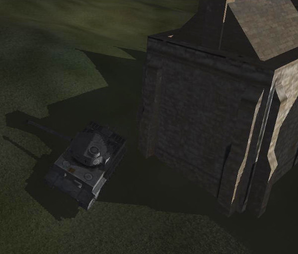

Off-screen textures (and other more complicated things)¶
The normal result of drawing objects with pi3d is for them to appear on the display. However there can be situations where it might be useful to capture the output and do other processing on it before posting it to the screen. Reasons include: blurring, distorting, edge detection and any number of artistic post-processing effect but also collision detection, shadow casting and stereo imaging.
In pi3d there is a class OffScreenTexture that inherits from Texture. It isn’t really intended to be used directly but other classes inherit from it: Clashtest, Defocus, PostProcess, ShadowCaster and StereoCam. Each of these has a similar outline work flow each frame.
- Start the off-screen capture
- Draw the objects in the scene, possibly with a special shader as with Clashtest or ShadowCaster but otherwise just normally i.e. PostProcess or StereoCam
- Stop the off-screen capture
- Process the image. Sometimes using a special shader, sometimes drawing the off-screen texture to a Sprite with a normal uv_flat shader.

Because offscreen textures can be used for a wide range of reasons the details of each one will vary greatly. However the Post-processing application is probably the most general so this is a good one to look at.
Open pi3d_demos/Post.py and, after running it to see what it does, try commenting out the lines 67, 73 and 78. This will basically cut out the capturing to off-screen texture and subsequent post processing so you can see what is being captured. For the moment ignore the fancy swirling texture on the Spheres, this is a separate complication that I will explain later. If you look inside the pi3d/util/PostProcess.py file you will see that although it can be called with all its arguments defaulting to values, in this instance we are passing a Camera instance and setting the divide argument. The reason for this is explained in the docstrings: there is a facility to only capture part of the screen to generate a lower resolution off screen texture which speeds up the whole rendering process quite a bit. In order to effect this low resolution capture the camera has to be defined with a wider field of view which is done on line 28 of pi3d_demos/Post.py (scale is a tidier alternative to defining a whole lens spec with larger fov) And the camera is passed to the PostProcess constructor in line 35 along with the same scaling factor, however you will notice that the camera instance is set to self.viewcam in line 51 which is then not used! The same camera is specified for myshape and mysprite on lines 42 and 48. The reason for all this camera specification is the default instance behaviour of pi3d - which will make the default camera from the first one to be created and, as a 2D camera is created in the __init__() function of PostProcess, care has to be taken to ensure that this doesn’t become the default instance by accident.
In PostProcess line 72 you can see the OffScreenTexture._start() method call and some code to just render part of the screen using the glScissor function. On line 85 OffScreenTexture._end() stops the screen capture and draw() renders a simple subdivided quad self.sprite using self.shader, self.tex_list and self.camera. On line 63 you will see that self.tex_list[0] points to the PostProcess instance itself which inherits the behaviour of pi3d.Texture via pi3d.OffScreenTexture. There are a couple of things that make this even harder to follow: 1. on line 64 and 65 there is a facility to add additional textures (such as bump and relfection) for use by the shader, 2. on lines 99 to 101 there is a facility to modify the unif array of self.sprite. The pi3d_demos/Post.py example doesn’t use any additional textures (although some of the shaders in pi3d_demos/FilterDemo.py do) but on line 78 of pi3d_demos/Post.py you will see that post.draw() is passed a value for unif[48] that very slowly increases from 2.0 to 6.999, after which it resets to 2.0.
Now if you look in pi3d/shader/post_base.fs - the fragment shader - you will see on line 27 that use seems to be made of unif[16][0] (remember that the “flat” c_types.float(60) array in python becomes vec3[20] in GLSL so unif[48] in python is unif[16][0] in the shader.) But what exactly is it doing? Well the vertex shader is very simple, essentially just setting the vertex location in gl_Position and flipping the image top to bottom as it sets the uniform variable texcoordout. In the fragment shader, lines 26 to 29 loop nine times to increment the eventual pixel RGBA value texc. Each loop looks up the value from the PostProcess texture using Texture2D with a slightly offset coordinate dx[] and dy[] and a weighting factor f[]. unif[16][0] is used as a multiplier for the dx[] and dy[] values in order to sample the “convolution” [1] over a wider area. If you watch the demo for long enough you will see the edges gradually get wider then suddenly jump back when the value in unif[48] wraps back to 2.0.
Other Shaders¶
The “star” shader used to texture the Spheres in pi3d_demos/Post.py above is another example of how you can use the GPU to do all kinds of fancy things. Look at the source code, which was contributed by Peter Hess based on www.iquilezles.org shadertoy demos. The shader works by converting the texture coordinates to a polar basis in lines 25 and 26, then applying factors that depend on an incrementing value “time” and trigonometric transformations, then using the values to lookup and modify the RGBA values from the texture sampler.
It’s quite fun to experiment with different formulas and values in shaders but, if you do, you will probably have to put your shaders in a subdirectory of your working directory (as with pi3d_demos/shaders) and you will probably have to “expand” the #include ... syntax used in the main pi3d shaders as the process of figuring out the path to import from might defeat the Shader loader! Shaders are difficult to debug as the only info is graphical output to the screen but a general rule is to start from something that works and change a very small part before testing. That way you will stand more chance of figuring out what broke it!
Video Textures¶
By using pi3d.Texture.update_ndarray() to update the Texture with a numpy array it’s possible to change the image relatively quickly. Obviously this depends on the size of the image and the power of the cpu but even on the Raspberry Pi it can give a reasonable frame rate using ffmpeg as the video decoder. Have a look at the pi3d_demos/VideoWalk.py
On line 39 image is defined as a numpy ndarray with dimensions the same as each video frame (N.B. C type arrays are rows (height) then cols (width) then RGB bytes). This array is then filled in a Thread running in the function pipe_thread() defined on line 41 and started just after that. In pipe_thread ffmpeg is run as a subprocess and the output piped into the image array (line 48). There is a slightly messy variable length sleep on line 58 to keep the video frame rate regular, and a flag is set so that the main Thread which has the pi3d frame loop can refresh the Texture after each video frame has been copied into the numpy array see line 168.
Conclusion¶
Hopefully you’ve arrived here, at the end of the book, with a better understanding of the way that pi3d uses the enormous processing power of the GPU through the OpenGL ES 2.0 standard. More importantly I hope you have a grasp of the architecture and terminology to help you search for and understand the answers to any problems you (inevitably) encounter as you start to make your own programs.
If you started reading this book because you had some specific ideas you wanted to implement then you will be tempted to launch straight into an ambitious project. I have to say that is an excellent idea. However, before you do any coding draw up a plan of action that identifies the smallest, simplest elements first then write short programs to help you get to grips with the problems one at a time at a manageable scale. This approach has the advantage of giving you encouraging feedback early on, it forces you to break the problem down into its functional elements and you build up a set of test programs to help you verify later changes to your project code.
Finally, don’t give up too quickly when you run into trouble, but don’t struggle on alone for too long either. There is always help available on-line. Try www.raspberrypi.org/forums/, groups.google.com/forum/ or stackoverflow.com to name but three.
| [1] | https://en.wikipedia.org/wiki/Kernel_(image_processing) |